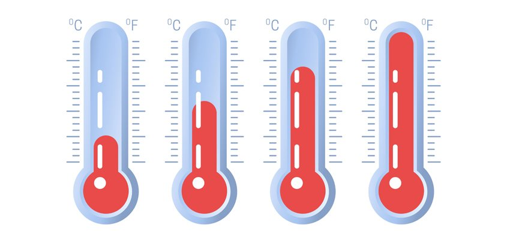

PHY 104

temparature
อุณหภูมิ (temperature) คือ ปริมาณทางฟิสิกส์ที่บ่งชี้ระดับความร้อนหรือเย็นของสสาร เป็นตัวแปรที่สำคัญมากที่สุดตัวแปรหนึ่ง ในกระบวนการแปรรูปอาหาร (food processing) ซึ่งส่งผลโดยตรงทั้งต่อคุณภาพอาหาร (food quality) และต้นทุนการผลิต โดยเฉพาะ อย่างยิ่งสำหรับอาหารที่เสื่อมเสียง่าย (perishable food) การควบคุมอุณหภูมิให้คงที่และเหมาะสมมีบทบาทตั้งแต่การขนส่ง (transportation) การเก็บวัตถุดิบ (raw material) การเตรียมวัตถุดิบ (raw material preparation) การแปรรูปผลิตภัณฑ์ (food processing) และ การจัดเก็บรักษาผลิตภัณฑ์ (storage) การเปลี่ยนแปลงอุณหภูมิของสสารในระหว่างกระบวนการแปรรูปจะส่งผลต่อการเปลี่ยนแปลง ปริมาณทางฟิสิกส์ของตัวแปรอื่น เช่น การเปลี่ยนแปลงความดัน (pressure) และการไหล (flow) เป็นต้น
หน่วยของอุณหภูมิที่สำคัญและใช้ในปัจจุบัน ได้แก่ องศาเซลเซียส (Celcius, oC) องศาฟาเรนไฮต์ (Fahrenheit, oF) และเคลวิน (Kelvin, K) ความสัมพันธ์ระหว่างหน่วยของอุณหภูมิแบบต่าง ๆ
Temperature Conversion
Celcius(℃)
℃ to ℉
Fahrenheit(℉)